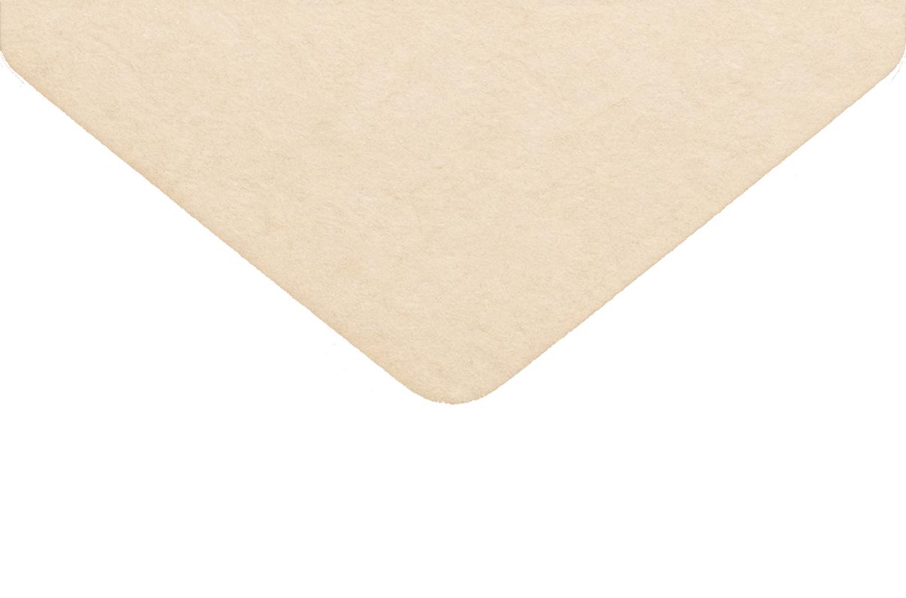
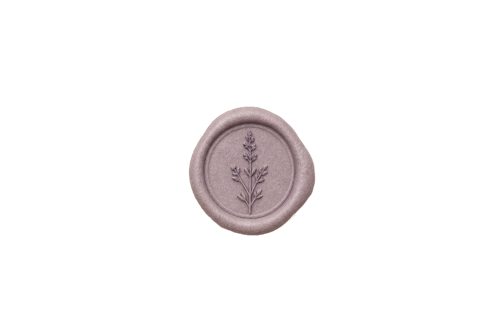
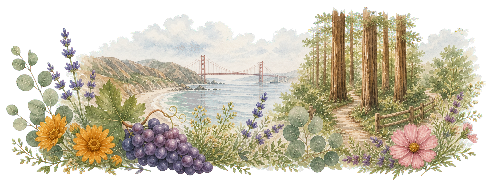

Saturday, May 29, 2027
5:00 pm to 11:00 pm
University of California Botanical Garden at Berkeley
200 Centennial Drive
Berkeley, CA 94720
The wedding ceremony will take place in the Redwood Grove. The reception will be held across the road at Julia Morgan Hall (5-10 minute walk). There will be staff on-site to direct you to the reception hall.
https://docs.google.com/forms/d/1QktiuGSVSggq0pkJ5Irf69tA8ty5eCuw1feYvifrjUE
The best way to get to the Garden is by car. We have 50 parking spaces reserved at the venue, from 4:30 pm to 11:30 pm. Please let us know if you intend to use a parking spot.
The Garden is also a 30-minute uphill walk from UC Berkeley's campus, if you are feeling extra adventurous.
If you are staying in Oakland or San Francisco, you might plan to take public transit to Berkeley and use a rideshare service to arrive at the Garden itself. The closest train station is Downtown Berkeley BART. There are also several AC Transit bus lines to UC Berkeley's campus. Please let us know if you have any questions about how to get to the Botanical Garden from where you're staying.
If you're traveling from out-of-state or out-of-country, the closest airport is OAK (Oakland San Francisco Bay Airport), but flights are often cheaper to SFO (San Francisco International Airport). Both airports provide easy access to Berkeley via BART (blue line from OAK, red line from SFO).
The Garden is fairly accessible from anywhere in the Bay Area, but the closest hotels are in downtown Berkeley close to campus. UC Berkeley offers a list of nearby hotels. Out of this list, some good options to check out would be
The Botanic Garden is also not far from downtown San Francisco, if you want to stay in the city. Some good options our friends have stayed at in the past are:
There are plenty of great AirBnBs available in Oakland, Berkeley, and San Francisco. If you think you've found a place, but you have a question about the specific location or neighborhood, let us know!
All events will be held at the University of California Botanical Garden at Berkeley.
| 5:00 pm | guests may enter the Redwood Grove |
|---|---|
| 5:30 pm | Ceremony Start in the Redwood Grove |
| 6:00 pm | reception begins in Julia Morgan Hall |
| 8:23 pm | sunset! (the Hall deck faces West toward the Bay!) |
| 11:00 pm | reception ends in Julia Morgan Hall |
We do not have a registry for this event.
If you would like to offer a gift, any and all gifts would be greatly appreciated. We would be especially grateful for any contributions toward our honeymoon - destination TBA!
The dress code for this event is semi-formal. The Garden has some gravel, uneven, or slightly inclined paths, in case that influences any shoe decisions.
On average, in May, Berkeley reaches high temperatures of about 70 degrees Fahrenheit (21 Celsius), and lows of 50 degrees Fahrenheit (10 Celsius). It may feel quite warm for the ceremony at 5:00 pm, especially if the sun is shining. However, it can also get quite cool and breezy once the sun goes down, or if it is cloudy or foggy. It does not usually rain in May.
Overall, we recommend bringing layers!

If you're traveling from out-of-town, there is so much to do here in the Bay Area while you're visiting! Here are some suggestions for other fun things to do over Memorial Day Weekend.
As our wedding guests, you receive same-day admission to the Botanical Garden for free! We highly recommend taking the opportunity to enjoy the Garden's extensive collections. With over 34 acres to wander, we recommend budgeting two hours to explore as much as you like!
The Garden will be open from 10:00 am - 5:00 pm on Saturday, May 27. There will be a free docent-led tour at 1:30 pm.
The Garden grounds include areas of paved pathways, as well as unpaved paths that may be narrow, rocky, uneven, or steep. Check the Garden Map for additional path information. There are three accessible parking spots available in the main Garden parking lot. Pets are not allowed in the Garden due to the sensitivity of the plant collection. However, trained service dogs, per UC Berkeley guidelines, are permitted and must first check in and be cleared at the Kiosk by Garden staff.
The Garden is a museum collection of living plants that are not to be disturbed in any way; they have been collected in the wild at great expense. Both soil and plants are delicate, and many are irreplaceable. Plant materials and labels, bed labels, benches, and potted plants must remain in their original locations. Stay to the paths -- no one is allowed at any time, for any reason, to enter the plant beds. Smoking/vaping in the Garden is strictly prohibited per UC policy.